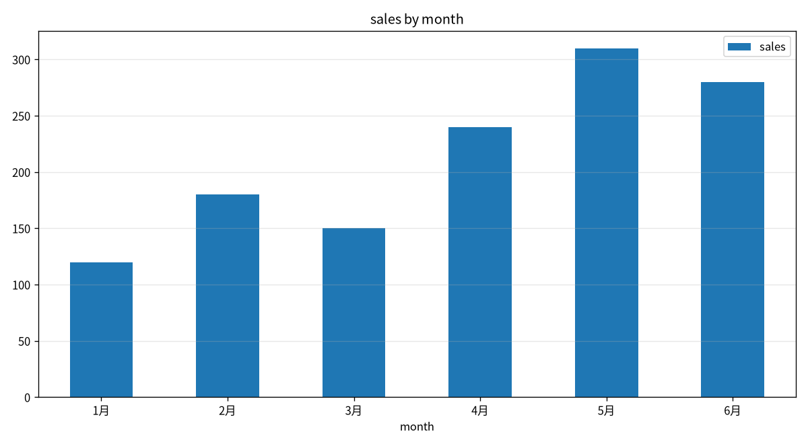

data data
FreeCSV/Excel/JSON convert, merge, dedupe, filter, sort, stats, charts
Installpip install "jiangkit[data]"
CLI examplejiang data data chart sales.csv --x month --y sales --kind bar

$ jiang data data stats sales.csv
Rows: 6 Columns: 2
Column overview:
month str nulls=0 unique=6
sales int64 nulls=0 unique=6
Numeric summary:
count mean std min 25% 50% 75% max
sales 6.0 213.333 75.277 120.0 157.5 210.0 270.0 310.0
Top values of 'month':
1月: 1
2月: 1
3月: 1
4月: 1
…